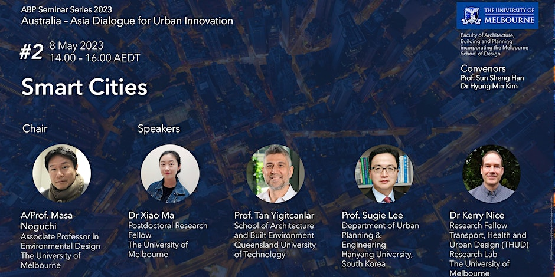

Pui Kwan Cheung, C.Y. Jim, Nigel Tapper, Kerry A. Nice, Stephen J. Livesley, Measuring the instantaneous cooling effect of turf irrigation in Melbourne, Australia, The 6th International Conference on Countermeasures to Urban Heat Islands (IC2UHI 2023), Melbourne, 4-7 December 2023.
Kerry Nice, David Bergmann, 'Water: enabling resilience and urban cooling', ABP Resilience Roundtable, 19 October 2023. | Presentation PDF
Resilience Roundtables
Flooding, fires, the pandemic and other disasters have recently tested the resilience of Victoria’s communities, infrastructure, environment and economy. Resilience Roundtables are a series of discussions to share knowledge about work to improve resilience across the state. Hosted by the University of Melbourne, Resilience Roundtables will bring together professionals, policy-makers, community leaders and researchers. The meetings will be 1:00pm - 2:00pm on the third Thursday of every month, at the University of Melbourne and on-line.
Intended Audience: The roundtables aim to create a community of practice for resilience practitioners and researchers in Victoria. We encourage local government , state government, community, emergency management, consultants, academics and those interested in the resilience space to attend.
Roundtable: Thursday the 19th of October
Topic: Water: enabling resilience and urban cooling
This session sets out to demonstrate that smart IoT irrigation and misting systems can contribute to cooler and greener residential environments. Cooler surrounds leads to lower housing energy costs, healthier people, and happier communities.
Speakers:
Dr David Bergmann, South East Water
Dr Kerry Nice, University of Melbourne
Date: The 3rd Thursday of every month
Time: 1:00pm - 2:00pm AEST
Location:
In person: Japanese Room, The University of Melbourne
Pui Kwan Cheung, C.Y. Jim, Nigel Tapper, Kerry A. Nice, Stephen J. Livesley, Daytime irrigation significantly reduces air and surface temperatures in backyards. ICUC11, 11th International Conference on Urban Climate, Sydney, 28 Aug-1 Sep 2023. | Abstract | Abstract PDF | Presentation PDF
Marzie Naserikia, Melissa A. Hart, Negin Nazarian, Benjamin Bechtel, Kerry A. Nice, Understanding within-city interaction between surface and air temperatures. ICUC11, 11th International Conference on Urban Climate, Sydney, 28 Aug-1 Sep 2023.| Abstract | Abstract PDF
Nigel Tapper, Andrew Coutts, Matthias Demuzere and Kerry Nice, Present Day and Future Cooling Enabled by Integrated Water Management, ICUC11, 11th International Conference on Urban Climate, Sydney, 28 Aug-1 Sep 2023. Poster, Tuesday 29 August 2023 | Abstract PDF| Poster PDF
Kerry A. Nice, Negin Nazarian, Mathew J. Lipson, Melissa A. Hart, Sachith Seneviratne, Jason Thompson, Marzie Naserikia, Branislava Godic, and Mark Stevenson, Isolating the impacts of urban form and fabric from geography on urban heat and human thermal comfort, ICUC11, 11th International Conference on Urban Climate, Sydney, 28 Aug-1 Sep 2023.| Abstract | Abstract PDF | Presentation PDF
Mathew Lipson, Sue Grimmond, Martin Best, Gab Abramowitz, Andrew Coutts, Nigel Tapper, Jong-Jin Baik, Meiring Beyers, Lewis Blunn, Souhail Boussetta, Elie Bou-Zeid, Martin G. De Kauwe, Cécile de Munck, Matthias Demuzere, Simone Fatichi, Krzysztof Fortuniak, Beom-Soon Han, Maggie Hendry, Yukihiro Kikegawa, Hiroaki Kondo, Doo-Il Lee, Sang-Hyun Lee, Aude Lemonsu, Tiago Machado, Gabriele Manoli, Alberto Martilli, Valéry Masson, Joe McNorton, Naika Meili, David Meyer, Kerry A. Nice, Keith W. Oleson, Seung-Bu Park, Michael Roth, Robert Schoetter, Andres Simon, Gert-Jan Steeneveld, Ting Sun, Yuya Takane, Marcus Thatcher, Aristofanis Tsiringakis, Mikhail Varentsov, Chenghao Wang, Zhi-Hua Wang, Andrew Pitman, The Urban-PLUMBER model evaluation project: Phase 1 results, ICUC11, 11th International Conference on Urban Climate, Sydney, 28 Aug-1 Sep 2023. | Abstract | Abstract PDF | Presentation PDF
Kerry Nice, Sachith Seneviratne, Youjin Choe, Mark Stevenson, Place-based Data Approaches: Data for analysis of spatial inequities in access to services, Life Course Centre Data For Policy Summit, Canberra, 15-16 August 2023. Summit Program | Presentation PDF
Dr. Kerry Nice (Research Fellow, Transport, Health, and Urban Design (THUD) Research Lab, The University of Melbourne): Visions of Healthy Urban Design: The Use of Computer Vision and Neural Networks in Assessing High-Performance City Design. Australia - Asia Dialogue for Urban Innovation: Smart Cities. 8 May 2023. | Presentation PDF

Australia - Asia Dialogue for Urban Innovation: Smart Cities
The Seminar Series of “Australia-Asia Dialogue for Urban Innovation” focuses on innovative urban approaches to critical global challenges that require collective actions for current and future generations. This series will contribute to establishing the research network and sharing knowledge with leading academic institutions in Australia and Asia. These quarterly events will seek evidence-based policy practices for urban innovation in Australia and Asia.
As the world becomes increasingly urbanized, interconnected, and dependent on technology, smart cities provide a promising picture of the city of the future. The use of sophisticated and integrated information and communication technology in various urban activities, from transportation, energy, buildings, and manufacturing, to government, not only encourages the more effective improvement of the quality of public services but also encourages sustainable use of resources and increases city liveability. It also provides greater opportunities for people to connect with others and access economic opportunities. But the fundamental question is: is this concept just a myth, or can it be implemented in reality?
The seminar will begin with a presentation from Dr. Xiao Ma, who explores the politics of transnational transport infrastructure and service provision. Then, Prof. Tan Yigitcanlar will explore smart city blueprints. Prof. Sugie Lee will give the following presentation, which elaborates on the limitations and future directions of applications of artificial intelligence in city and regional planning. The final presentation will be delivered by Dr. Kerry Nice, which looks at the use of computer vision and neural networks in assessing high-performance city design, especially concerning visions of healthy urban design. This event will have Q&As, which will be moderated by A/Prof. Masa Noguchi.
The seminar will be held in the Japanese Room, Glyn Davis Building, Monday, May 8, 2 p.m.–3:30 p.m., followed by afternoon tea.
List of Presentations:
Dr Xiao Ma (Postdoctoral Research Fellow, The University of Melbourne): The Politics of Transnational Transport Infrastructure and Service Provision
Prof. Tan Yigitcanlar (School of Architecture and Built Environment, Queensland University of Technology): Smart City Blueprint
Prof. Sugie Lee (Department of Urban Planning & Engineering Hanyang University, South Korea): Applications of Artificial Intelligence in City and Regional Planning: Limitations and Future Directions
Dr. Kerry Nice (Research Fellow, Transport, Health, and Urban Design (THUD) Research Lab, The University of Melbourne): Visions of Healthy Urban Design: The Use of Computer Vision and Neural Networks in Assessing High-Performance City Design
Marzie Naserikia, Melissa A. Hart, Negin Nazarian, Benjamin Bechtel, Kerry A. Nice, Understanding within-city interaction between surface and air temperatures. EGU General Assembly 2023, Vienna, Austria & Online | 23–28 April 2023. Abstract | Abstract PDF
Understanding within-city interaction between surface and air temperatures
Marzie Naserikia, Melissa A. Hart, Negin Nazarian, Benjamin Bechtel, and Kerry A. Nice
Urban heat is a local scale warming effect associated with urban areas where most of the world's population live. Due to the scarcity of air temperature (Ta) data, urban heat studies have been mostly focused on Land Surface Temperature (LST) extracted from satellite imagery and a quantitative understanding of how LST interacts with Ta within a city is still lacking. Using crowdsourced weather station data in Sydney, Australia, combined with high resolution satellite images and urban datasets (such as Local Climate Zone (LCZ) and building-level urban data), we explore the interaction between Ta and LST, and their intra-urban variabilities during different seasons. We found that LST and Ta have different characteristics and their dependency varies by season and LCZ. When exploring the relationship between Ta, LST, and variables describing the urban structure, such as building fraction, the correlation between LST and urban structure was stronger and more seasonal dependent than the Ta-urban form relationship. Moreover, stronger correlations between LST and Ta were observed in the less built-up areas within the city. We also found that the determinants of LST variability are different from the contributing factors of Ta. These findings provide new insights for quantitatively investigating surface and canopy urban heat and their relationship with land cover, providing fit-for-purpose information to mitigate the adverse effects of urban overheating at local and global scales.
How to cite: Naserikia, M., Hart, M. A., Nazarian, N., Bechtel, B., and Nice, K. A.: Understanding within-city interaction between surface and air temperatures, EGU General Assembly 2023, Vienna, Austria, 24–28 Apr 2023, EGU23-10461, https://doi.org/10.5194/egusphere-egu23-10461, 2023.
2022
Jason Thompson, Sachith Seneviratne, Kerry Nice, Rajith Vidanaarachchi, 'Remembering and Interpreting Parkville Through Artificial Eyes', Australian Centre for Architectural History, Urban and Cultural Heritage (ACAHUCH) Inaugural Symposium : Park Life 2022, 04 November 2022. Symposium | Abstract PDF
Could we conjure up an accurate vision of a time or a place if we had never been there? Could we then envisage such a place through another’s eyes? What if we could delve into entire world’s collective understanding of a place or perspective and extract an example of that representation? Would such a vision be robust, believable, or an any way meaningful? What effect might extracting such a scene have on our own understanding of empathy, creativity, imagination, possibility, or design practice?
To date, a limiting feature of artificial intelligence (AI) in applications ranging from those used in financial markets to health, object detection, and design has been their reliance on vast historical datasets from which they build perceptions and projections of the world before to relaying this information back to humans. This reliance has so far left scant room for apparent understanding, interpretation, or imagination of the sort truly recognised as ‘intelligence’ by humans. Suchlimitations, however, are perhaps drawing to a close with the advent of text-to-image generators(1). Text-to-image generators are opening the door for AI applications to reach human levels of conceptual creativity resembling considered integration, interpretation, and genuine imagination - with the capacity to even build memories of their own.
Contemporary text-to image generators are now enabling designers to combine and re-imagine features, objects, locations, times, scenes, and styles that can generate unique visions spanning anywhere from reality to impressionism to bizarre fiction. In doing so, they can lead us on an exploration of an alternate and at times fascinating potential world of how others might have seen or interpreted a place like Parkville.
In this presentation we demonstrate a re-imagining of Parkville and surrounds through capturing the collective hive-mind of the world-wide web using modern text-to image generators. We demonstrate an interpretation of Parkville under conditions where the features we desire and the lens we peer through are selected, combined, and balanced. We ask for consideration of what the model really understands, what the images convey, and leave open a discussion of the aesthetics, ethics, and meaning of artificially generated design to the audience. We show how artificial design resemblingimagination, will be a feature of our future and perhaps eventually, even our history.
Kerry A Nice, The impact of the COVID-19 pandemic on air pollution: A global assessment using machine learning techniques, 2022 IAUC, International Association for Urban Climate Virtual Poster Conference, 30 Aug-1 Sep 2022, Special session: COVID impacts on urban climates. Conference poster, Abstract | Poster PDF
In response to the COVID-19 pandemic, most countries implemented public health ordinances that resulted in restricted mobility and a resultant change in air quality. This has provided an opportunity to quantify the extent to which carbon-based transport and industrial activity affect air quality. In this study, confounding factors were disentangled for a direct comparison of pandemic-related reductions in absolute pollutions levels, globally. The non-linear relationships between atmospheric processes and daily ground-level NO2, PM10, PM2.5 and O3 measurements were captured in city- and pollutant-specific XGBoost models for over 700 cities, adjusting for weather, seasonality and trends. City-level modelling allowed adaptation to the distinct topography, urban morphology, climate and atmospheric conditions for each city, individually, as the weather variables that were most predictive varied across cities. Pollution forecasts for 2020 in absence of a pandemic were generated based on weather and formed an ensemble for country-level pollution reductions. Findings were robust to modelling assumptions and consistent with various published case studies. NO2 reduced most in China, Europe and India, following severe government restrictions as part of the initial lockdowns. Reductions were highly correlated with changes in mobility levels, especially trips to transit stations, workplaces, retail and recreation venues. Further, NO2 did not fully revert to pre-pandemic levels in 2020. Ambient PM2.5 pollution, which has severe adverse health consequences, reduced most in China and India. Increased O3 levels during initial lockdowns have been documented widely. However, our analyses found a subsequent reduction in O3 for many countries below what was expected based on meteorological conditions during summer months (e.g., China, United Kingdom, France, Germany, Poland, Turkey). The effects in periods with high O3 levels are especially important for the development of effective mitigation strategies to improve health outcomes.
Mathew J Lipson, Charmaine Franklin, Asiful Islam, Negin Nazarian, Melissa Hart, Kerry Nice, Brooke Conroy, Improved high resolution city-descriptive input data for urban meteorological modelling. 2022 IAUC, International Association for Urban Climate Virtual Poster Conference, 30 Aug-1 Sep 2022, Urban climate methods session: UCI and modeling. Abstract
In urban areas, high quality land cover datasets are required to take full advantage of improvements offered by sub-kilometre weather and climate simulations. At the Australian Bureau of Meteorology, we are expanding our modelling capabilities to allow ~100 m simulations over major Australian cities and so require better urban maps. We describe the Bureau’s work replacing traditional single-class urban maps (e.g. IGBP or CCI) with newer, higher-quality datasets available at national and global scales (e.g., Geoscape, WorldCover, WSF3D, CCIv2 and global LCZs). We assess the strengths and weaknesses of the different datasets in terms of accuracy, fidelity, availability and impact on forecasting skill. We describe the variables available in each dataset (land cover, building and vegetation morphology, etc.), and how this impacts the configuration of different urban models. Our early and preliminary results show the highest resolution datasets with the most morphology information (e.g., Geoscape) provide the greatest benefit to forecasting skill. While Geoscape is a restricted dataset in its native resolution (~1 m), we provide a new open Geoscape-derived dataset at 300 m resolutions over the greater Sydney region, including all input variables typically required by urban weather and climate models. We also describe our methods to convert other openly and globally available high-resolution datasets to appropriate model input formats.
2021
Mathew Lipson, Sue Grimmond, Martin Best, Chenghao Wang, Alberto Martilli, Martin De Kauwe, Souhail Boussetta, Keith Oleson, Yuya Takane, Martin Best, Meiring Beyers, Maggie Hendry, Sang-Hyun Lee, Ning Zhang, Gert-Jan Steeneveld, Aristofanis Tsiringakis, Jong-Jin Baik, Krzysztof Fortuniak, Ting Sun, Kerry Nice, Valéry Masson, Matthias Demuzere, Marcus Thatcher, Naika Meili, David Meyer, Zhihua Wang, Andres Simon, Gab Abramowitz, Joe McNorton, Michael Roth, Doo-Il Lee, Seung-Bu Park, Aude Lemonsu, Hendrik Wouters, Simone Fatichi, Beom-Soon Han, Cécile De Munck, Tiago Machado, Robert Schoetter, Gabriel Manoli, Valérie Masson, Hirofumi Sugawara, Stevan Earl, Eric Velasco, Matthias Roth, Leena Järvi, Rachel Spronken-smith, Andy Coutts, Helen Ward, Simone Kotthaus, Włodzimierz Pawlak, Nektarios Chrysoulakis, Kim Novick, Yurong Shi, Ahmed Balogun, Andreas Christen, David Reed, Fred Meier, Ian Strachan, Jenny Salmond, Jinkyu Hong, Joe McFadden, Junxia Dou, Rachel Spronken-Smith, Zutao Yang, Andy Pitman. Urban-PLUMBER model evaluation project: initial results, EGU General Assembly 2021, online, 19–30 Apr 2021, EGU21-15230, https://doi.org/10.5194/egusphere-egu21-15230, 2021. Presentation
We present initial results of the Urban-PLUMBER international model evaluation project. This project assesses the performance of land surface models used in meteorological simulations of urban areas. Phase 1 included 24 models of varying complexity, from simple slab models through to multi-layer urban canopy models.
54 model output variables are requested, including primary surface energy fluxes, anthropogenic heat and moisture fluxes, soil variables, albedo, canopy and building air temperatures. This rich dataset is used to both compare model outputs with observations and to understand factors contributing to model performance.
The project involved a number of other innovations including:
An online portal (modelevaluation.org) is used to distribute site data and accept submissions.
Upon submission to the portal participants are provided with variable near-instant compliance checks and analyses allowing participants to make corrections if required.
A ten-year ERA5-derived spin up which overcomes the typically short period of urban flux tower observations and allows the entire observed period to be used in analyses.
Testing models alongside simple empirical benchmarks (e.g. out-of-sample linear regression of turbulent fluxes on shortwave radiation) to assess if input information is used effectively.
We also discuss the initial stages of Phase 2 which involves testing models at many urban sites. From the known global urban flux tower observations, following assessment, 25 are selected to capture a range of urban characteristics and climates. Surface characteristics are gathered, observations quality controlled and prepended with ten years of bias corrected ERA5 meteorological data for spinup. This new standardised urban flux tower dataset will become a valuable tool in future urban modelling projects.
2020
Kerry Nice and Ashley Broadbent. Targeted urban heat mitigation strategies using urban morphology databases and micro-climate modelling to examine the urban heat profile. In: EGU General Assembly 2020, Online, 4–8 May 2020, DOI: 10.5194/egusphere-egu2020-12795, Presentation
| Video | Presentation PDF
2019
Kerry A. Nice, Gideon D.P.A. Aschwanden, Jasper S. Wijnands, Jason Thompson, Haifeng Zhao, Mark Stevenson. The Nature of Human Settlement: Building an understanding of high performance city design (a.k.a. Block Typologies). In: UrbanSys2019 satellite session of 2019 Conference on Complex Systems, Singapore, 2 October 2019. Presentation PDF
Nice, K.A. Urban climatology introduction for Melbourne Cool Line Studio, Monash University, 19 August 2019.
Guest lecture PDF
Jason Thompson, Kerry Nice 'Linking empirically derived city typologies and heath', In: "Re-visioning transport and health", University of Cambridge workshop and hackathon, 2-4 July 2019, Homerton College, Hills Road, Cambridge.
Stevenson, M; Thompson, J; Wijnands, J; Nice, K; Aschwanden, G; Zhao, H, (2019) 'Road Traffic Injury in Urban Areas: Understanding the Complex City’, in ICoRSI International Symposium on Safety of Vulnerable Road Users, 25-26 March 2019, Changsha, China, pp. 25–26. Available at: https://minerva-access.unimelb.edu.au/handle/11343/233181 | Presentation PDF
Nice, K.A. Climate science context around urban cooling. In: 4th Water Sensitive Cities Conference 2019, 26 - 28 March 2019, Brisbane, Australia.Invited presentation PDF
2018
Meili, N., Fatichi, S., Manoli, G., Burlando, P., Roth, M., Velasco, E., Nice, K. A., Tapper, N. J., Daly, E. and Coutts, A. M. (2018) ‘A new Urban Ecohydrological Model to quantify the effect of vegetation on microclimate and water fluxes in cities’, In: AGU Fall Meeting 2018, Washington D.C., USA, 10-14 December 2018. American Geophysical Union (AGU Fall Meeting Abstracts), p. GC33C–06.Presentation | Presentation PDF
J. S. Wijnands, J. Thompson, K. Nice, G. Aschwanden, and M. Stevenson (2018). “Action recognition to
prevent fatigue-related road trauma using artificial intelligence”. In: Symposium on New Research Applications for
Tackling Complex Road Safety Issues, 2018 Australasian Road Safety Conference. Oct. 3, 2018. Sydney. Invited talk.
J. S. Wijnands, K. Nice, J. Thompson, H. Zhao, and M. Stevenson (2018). “Using GANs to optimise health outcomes
of cities by transforming urban design”. In: 4th International Conference on Machine Vision and Machine Learning.
Aug. 21–23, 2018. Madrid. PDF
Nice, K.A., Wang, J, Wijnands, J. S., Thompson, J., Aschwanden, G.D.P.A, Stevenson, M. Mining Google Street View for Urban Climate Micro-Climate Human Thermal Comfort Modelling Parameters. In: ICUC10, 10th International Conference on Urban Climate/ 14th Symposium on the Urban Environment, 6-10 August 2018, New York, NY.Presentation | Presentation PDF
Nice, K.A., Thompson, J., Wijnands, J. S., Aschwanden, G.D.P.A, Stevenson, M. The ‘Paris-end’ of town? Urban typology through machine learning. In: AAG 2018, Symposium on New Horizons in Human Dynamics Research, New Orleans, 12 April 2018.Presentation | Presentation PDF
Nice, K.A. Urban Greening for improved human thermal comfort. In:
202020 Vision, The Green Light Tour, 27 March 2018, Adelaide, Australia.Invited presentation PDF
2017
J. S. Wijnands, J. Thompson, K. Nice, G. Aschwanden, and M. Stevenson (2017). "Using deep learning to detect
driver drowsiness from video footage". In: International Conference on Engineering, Technology, and Applied
Science. Nov. 7–9, 2017. Kitakyushu.
Nice, K.A., Urban Greening for improved human thermal comfort. In:
Guest lecture - Master of urban planning STUDIO, University of Melbourne, 2 October 2017, Melbourne, Australia.
Nice, K.A., Microclimate Models and Application in the Urban Environment. In:
Guest lecture - ATS3887/APG4887 - Designing Urban Futures: Urban Climate, Water and Adaptation. Monash University. September 2017 - Melbourne, Australia.
Nice, K.A., Designing liveable cities through heat mitigation: tools to translate knowledge into design. In: 3rd Water Sensitive Cities Conference, 18-20 July 2017, Perth.Invited presentation PDF
Nice, K.A., Urban Greening for improved human thermal comfort. In: CRC for Water Sensitive Cities Ideas for Subiaco Water Resource Area, 24 May 2017, Perth.Invited presentation PDF
2016
Nice, K.A., Coutts, A., Tapper, N., and Beringer, J. A micro-climate examination of the temperature moderating potential of increased vegetation and water in urban canyons using VTUF-3D. In: 29th VUEESC Conference, 3-4 November 2016, Melbourne.Presentation PDF
Nice, K.A., Microclimate Models and Application in the Urban Environment. In: Guest lecture - ATS3887/APG4887 - Designing Urban Futures: Urban Climate, Water and Adaptation. Monash University. September 2016 - Melbourne, Australia.
Nice, K.A., Coutts, A., Tapper, N., Krayenhoff, S., Duursma, R., and Beringer, J. A micro-climate examination of the temperature moderating potential of increased vegetation and water in urban canyons using VTUF-3D. In: Joint CRC Low Carbon Living & CRC for Water Sensitive Cities Workshop on Urban Micro-Climates and Adaptive Urban Design, 21-22 March 2016, Melbourne.Presentation PDF
Nice, K.A., Coutts, A., Tapper, N., Krayenhoff, S., Duursma, R., and Beringer, J. A micro-climate examination of the temperature moderating potential of increased vegetation and water in urban canyons using VTUF-3D. In: 2nd International Conference on Urban Tree Diversity, 22-24 February 2016, Melbourne.Presentation PDF
Nice, K.A., Coutts, A., Tapper, N., Krayenhoff, S., Duursma, R., and Beringer, J. A micro-climate examination of the temperature moderating potential of increased vegetation and water in urban canyons using VTUF-3D. In: AMOS/ARCCSS National Conference 2016. 8-11 February 2016, Melbourne Convention and Exhibition Centre.Presentation PDF
2015
Nice, K.A., (Improved) micro-climate modelling assessment of the influence of water sensitive urban design on
human thermal comfort: Pre-submission presentation. Monash University. 17 September 2015 - Melbourne, Australia.Presentation PDF
Nice, K.A., Microclimate Models and Application in the Urban Environment. In:
Guest lecture - ATS3887/APG4887 - Designing Urban Futures: Urban Climate, Water and Adaptation. Monash University. 16 September 2015 - Melbourne, Australia.Presentation PDF
Nice, K.A., Coutts, A., Tapper, N., Beringer, J. and Krayenhoff, S. VTUF-3D: An urban micro-climate model to assess temperature moderation from increased vegetation and water in urban canyons. In:
2nd Water Sensitive Cities Conference 2015. 8-9 September 2015 - Brisbane, Australia.Poster 1Poster 2Presentation PDF
Nice, K.A., Coutts, A., Tapper, N., Krayenhoff, S. and Beringer, J. VTUF-3D: An urban micro-climate model to assess temperature moderation from increased vegetation and water in urban canyons. In: ICUC9 - 9th International Conference on Urban Climate 2015. 20-24 July 2015 - Toulouse, France.Presentation PDF
2014
Nice, K.A., Tapper, N., Beringer, J.,Coutts, A. and Krayenhoff, S. An urban micro-climate model for assessing impacts of Water Sensitive Urban Design. In: Water Sensitive Cities Conference 2014. 21-23 October, 2014 - Melbourne, Australia.Poster PDF
Nice, K.A., Tapper, N., Beringer, J.,Coutts, A. and Krayenhoff, S. An urban micro-climate model for assessing impacts of Water Sensitive Urban Design. In: 11th Symposium on the Urban Environment, 94th AMS Annual Meeting, 2-6 February 2014, Atlanta, GA.Poster PDF
2013
Nice, K.A., Coutts, A, Beringer, J, Tapper, N and Krahenhoff, S. Introducing the TUF-3D/MAESPA urban micro-climate model. In: 8th International Water Sensitive Urban Design Conference 2013. 25–29 November 2013 - Gold Coast, Australia.Presentation PDF
2012
Nice, K.A., Coutts, A, Broadbent, A, Beringer, J, Tapper, N and Krahenhoff, S. Evaluation of WSUD modeling strategies. In: 8th International Conference on Urban Climate – ICUC 8 and 10th Symposium on the Urban Environment. 6th - 10th August 2012 - Dublin, Ireland.Presentation PDF
Nice, K.A. and Isaac, P. The micro-climate of a mixed urban parkland environment [online]. In: WSUD 2012: Water sensitve urban design; Building the water sensitve community; 7th International Conference on Water Sensitive Urban Design, 21 - 23 February 2012, Melbourne Cricket Ground. Barton, A.C.T.: Engineers Australia, 2012: 719-739. ISBN: 9780858258952. Presentation PDF